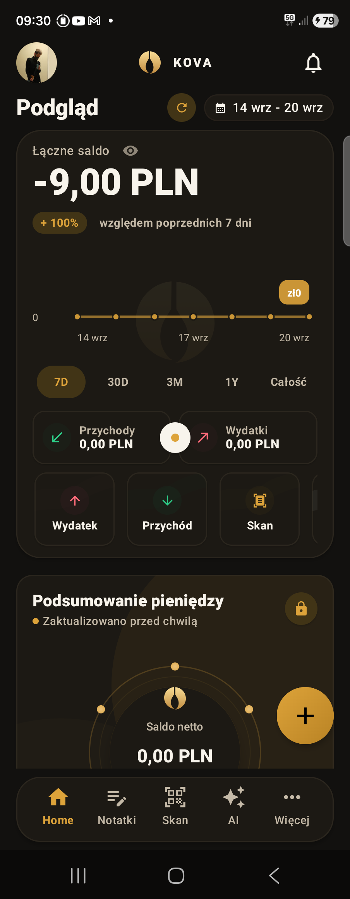
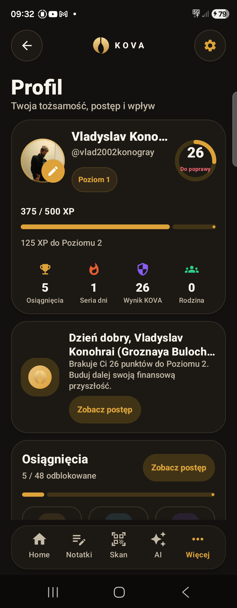

KOVA na Androida
Finanse
w jednym miejscu.
Wydatki, budżety, cele i dochód z pracy w jednej aplikacji.
W rozwoju · publiczne pobieranie nie jest jeszcze dostępne.


Aplikacja
Prawdziwe ekrany KOVA.
Zrzuty pochodzą z działającej kompilacji na telefonie.
Dotknij ekranu, aby zobaczyć go w całości.Projekt w rozwoju
Co dalej z KOVA?
Aplikacja jest rozwijana i testowana. Tutaj sprawdzisz jej dostępność, plan prac i ostatnie zmiany.
Prywatność
Jak KOVA chroni dane.
Podstawowe dane finansowe są przechowywane lokalnie w szyfrowanej bazie. Funkcje online są oddzielone i opisane.
Czytaj o bezpieczeństwieWarto wiedzieć
Kilka prostych odpowiedzi.
Zanim zaczniesz korzystać z KOVA.
Czy mogę już pobrać KOVA?
Publiczne pobieranie nie jest jeszcze dostępne. Sprawdzony link do sklepu pojawi się na stronie statusu projektu po przygotowaniu wydania. Nie podajemy daty, dopóki nie będzie potwierdzona.
Czy aplikacja działa bez internetu?
Podstawowe dane finansowe są przechowywane na urządzeniu. Logowanie Google, funkcje rodzinne i inne usługi online potrzebują połączenia z internetem.
Czy muszę podłączać konto bankowe?
Nie. KOVA nie wymaga haseł do banku. Konta w aplikacji służą do porządkowania zapisywanych przez Ciebie finansów.
Czy prognozy i kwoty netto są gwarantowane?
Nie. To szacunki oparte na zapisanych danych i konfiguracji. Mogą różnić się od rzeczywistych wypłat i nie zastępują dokumentów pracodawcy ani indywidualnej porady.
Czy ta strona ma dostęp do moich finansów?
Nie. Strona przedstawia projekt i nie łączy się z bazą finansową w telefonie. Opcjonalna analityka strony zależy od Twojej zgody.
Dokumenty
Zasady KOVA.
Prywatność, warunki korzystania i cookies w jednym miejscu.